This page covers all the elements you'll find in "Gunthro and the Epic Blunder", but many more elements are known to exist and can be seen in other holds, and you can use them yourself in the editor. These are discussed under Advanced Game Elements
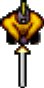 In "Gunthro and the Epic Blunder" you play Gunthro. He and his sword take up two squares. Keeping the sword between Gunthro and the monsters is the key to staying alive. For more information about movement, see Keyboard Commands. In other holds (including earlier DROD games), you may play as Gunthro's grandson, Beethro. His behaviour is, for the most part, identical.
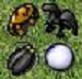 The monsters Gunthro destroys in a room will come back to life when you reenter the room if all of them are not destroyed. You will want to refer to the authoritative Monster Reference for more information.
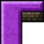 Like walls in the real world, these are obstacles that prevent movement.
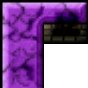 Crumbly walls are ready to fall apart but have to be looked for as they blend in with solid walls.
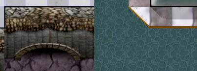 Pits and water are not particularly dangerous since Gunthro is too experienced an explorer to accidentally fall into them, but be careful of trapdoors that can leave him shanghaied and monsters that fly or swim. Trapdoors fall away to pit or water after being stepped upon once.
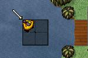 Rafts can be used by Gunthro to cross water-covered areas. Shallow water however, is too shallow for rafts to be used.
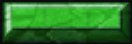 Room clear gates (or green doors) are opened when all of the monsters in a room are defeated. Once a green door is opened, it will remain open when a room is left.
Level clear gates (or blue doors) are opened when all of the monsters in the level are defeated and all rooms are visited. There are some exceptions to these rules which you may encounter. Once a blue door is opened, it will remain open when a room is left.
Trapdoor gates (or red doors) are opened when all of the trapdoors in a room have collapsed. Unlike green and blue doors, red doors always close again when a room is left.
Yellow doors are opened and closed by striking orbs with Gunthro's sword. When an orb is hit, bolts of energy will shoot from it opening, closing, or toggling one or more doors. Some orbs are damaged and can only be used once. There are some tricky puzzles that are based on these doors. Unlike green and blue doors, yellow doors return to their original state when a room is left.
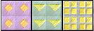 Like orbs, pressure plates are used to affect yellow doors. They are activated when something weighs them down. Three kinds of plates exist: one-time plates are only activated the first time they're depressed, multi-use plates are activated each time they're depressed, and on-off plates are activated both when they are depressed and when they are released.
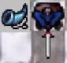 When Gunthro picks up a soldier horn he calls one nearby soldier to the nearest entrance to help out. Rasarun soldiers behave like stalwarts - they are sworded allies who can help kill monsters, but aren't entirely bright. If there are no entrance squares with a direct path to the player, the soldier does not appear and the horn is used up.
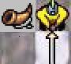 When Gunthro picks up a squad horn he calls one nearby squad member to the nearest entrance to help out. Squad members behave like player clones - you can switch to control them using the Tab key, or by clicking on them with the mouse. If there are no entrance squares with a direct path to the player, the squad member does not appear and the horn is used up.
Stairways connect areas of dungeons together. Most levels are completed by finding stairs leading to the next.
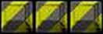 Master walls will fade after the hold has been completed and all the secret rooms in the hold have been cleared. When these conditions have been met, restore game to a room with master walls. Gunthro can now walk through them.
Scrolls contain information that may or may not be useful. Gunthro must step on the same square they are in to read them.
Force arrows prevent movement in the opposite direction they point. The north-pointing force arrow could be stepped onto from all directions except northwest, north, and northeast. Once Gunthro steps onto a north-pointing force arrow he can leave in all directions except southwest, south, and southeast.
Bombs can be activated by either Gunthro's sword or a burning fuse. When a bomb explodes, monsters within a range of 3 squares of the bomb will die. If another bomb is located within that range, it will explode as well. A fuse can be activated by walking away from a fuse endpoint, or by an explosion. They will not burn against the direction of force arrows.
Tunnels allow Gunthro to quickly move from one area of a room to another. When Gunthro is standing on a tunnel square and moves in the direction the tunnel faces, he will reappear on the closest tunnel square in the same column/row of that direction. Monsters won't ever use tunnels, and they will only move onto a tunnel square if Gunthro is standing on it, in which case, Gunthro dies as usual.
You can step on checkpoints to save game at that point in time in the room. Using checkpoints can make difficult rooms easier to conquer. If Gunthro dies after stepping on a checkpoint in the room, he will return to the last checkpoint he stepped on instead of starting the room over. A checkpoint may be used to re-save the game when stepped on any number of times. Checkpoints can be turned on or off in the player settings.
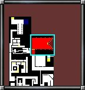 The minimap shows the rooms in Gunthro's immediate vicinity that have been explored. If a room has any monsters remaining it will be red (if clearing the room is required to open the level's blue door) or magenta (not required). Once all of the monsters have been removed from the current room it will turn green. When Gunthro has exited a green room successfully it will turn white. Usually, all rooms must be turned white for Gunthro to exit the level.
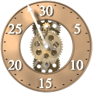 When Gunthro's threat clock appears, it will help you anticipate forthcoming dangerous phenomena, which usually occur every thirty turns. Other special monster events happen on multiples of five or ten.